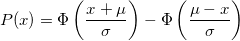
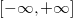

Foldnormcdf
Foldnormcdf-func
Description
Computes the lower tail probability for the Folded Normal distribution.
- 
where Φ is the CDF function for the standard normal distribution
Syntax
double prob = foldnormcdf(x,mu,sigma)
Parameters
x
- Input, the value of the folded standard Normal variate 
mu
- Input, mean of the associated folded normal distribution .
sigma
- Input, standard deviation of the associated folded normal distribution.
prob
- Output, the returned probability.